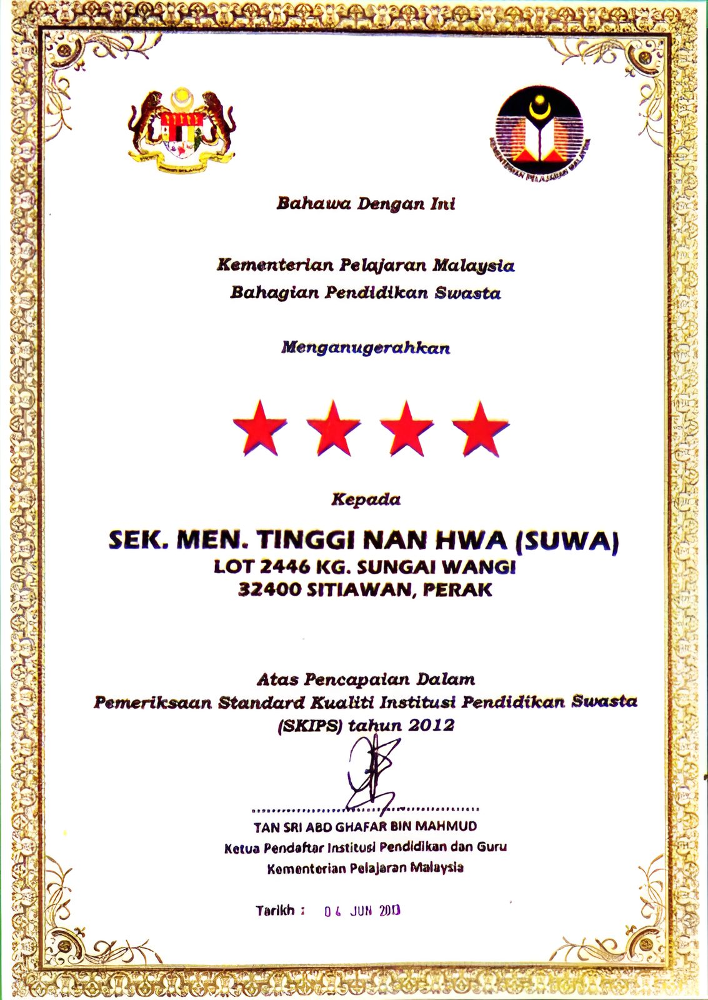
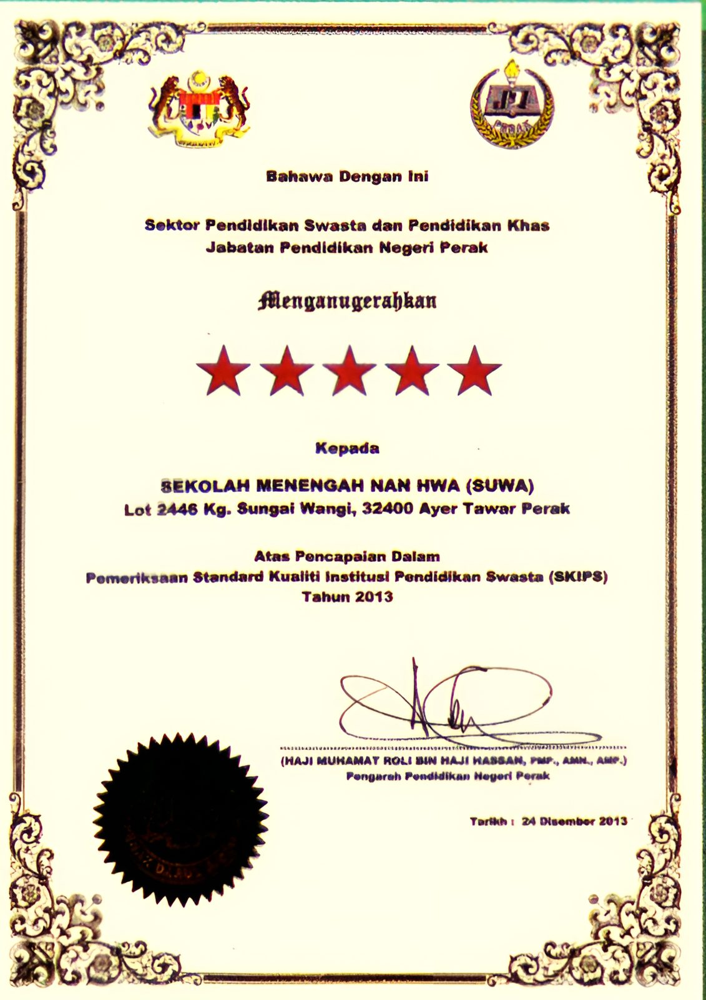
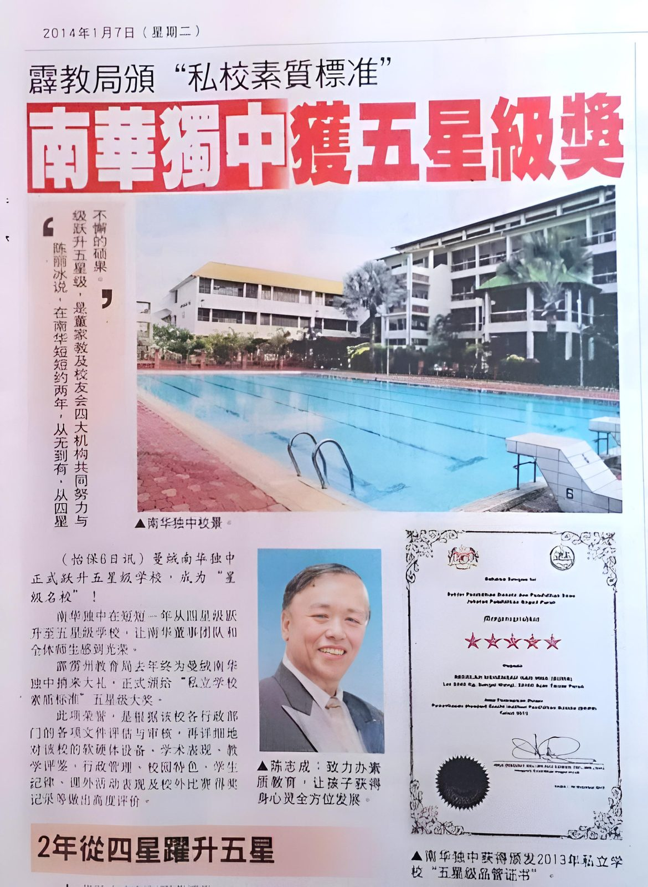
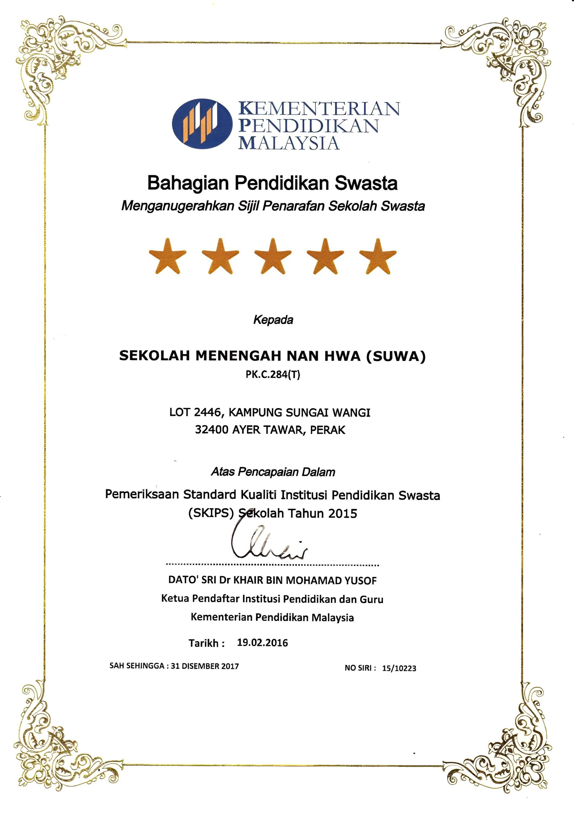
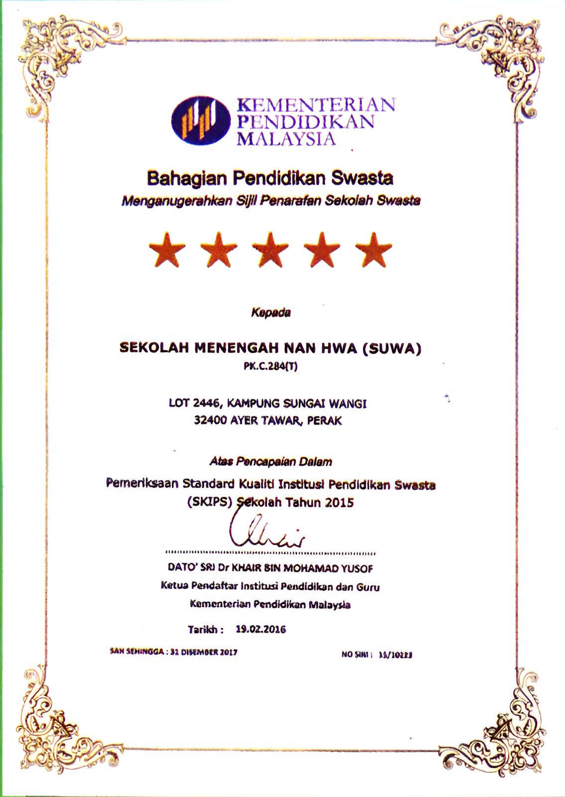
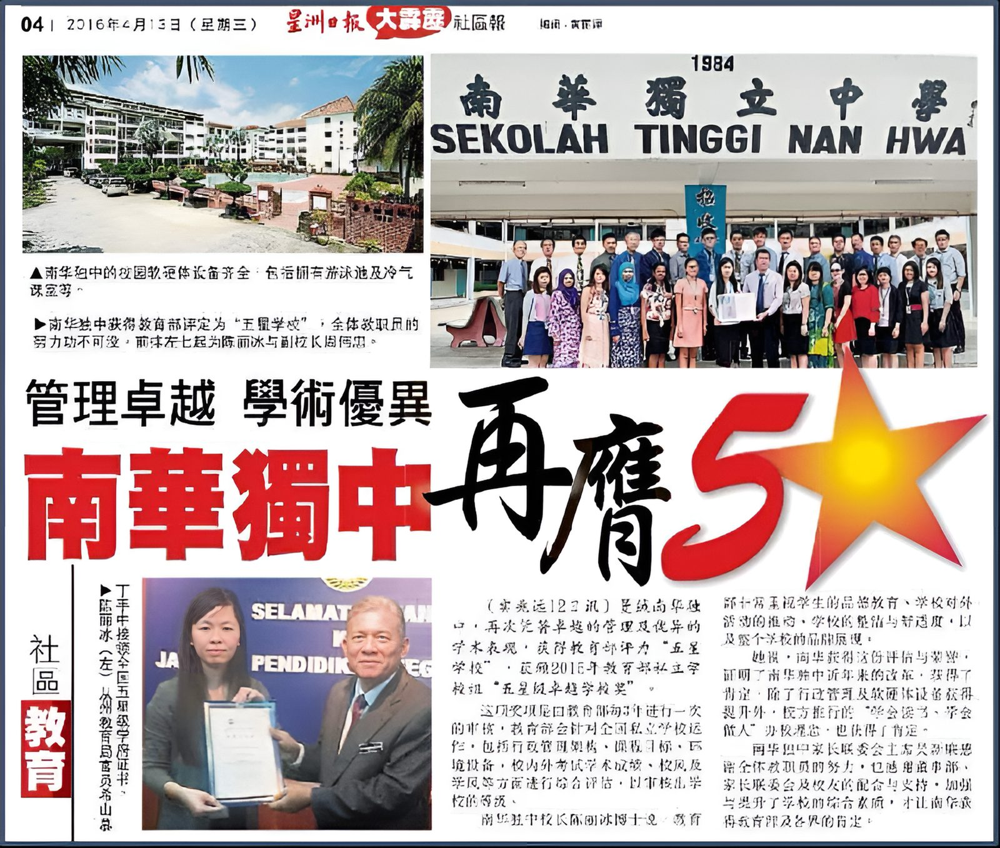

2012 – 2016
私立学校素质标准认证（SKIPS）
南华独中两年内从四星跃升五星，隔年再度蝉联






2012 年度全国私立学校素质标准（SKIPS）评估中，南华独中获颁四星级认证；短短一年后，在 2013 年度评估中跃升五星级，由霹雳州教育局颁证。2014 年 1 月 7 日，《星洲日报》以〈南华独中获五星级奖〉为题报道这项成绩。
2015 年度评估中，教育部续发五星级认证；2016 年 4 月 13 日，《星洲日报》再以〈南华独中再蝉联 5 星〉专题报道，标题点出「管理卓越，学术优异」，校长陳麗冰博士代表全体教职员领证。